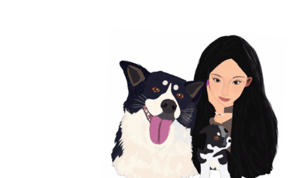
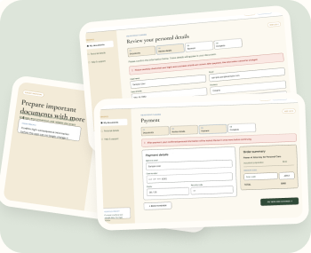
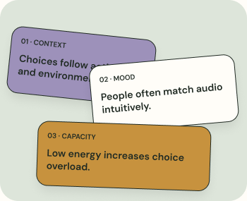
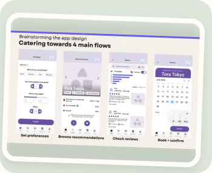
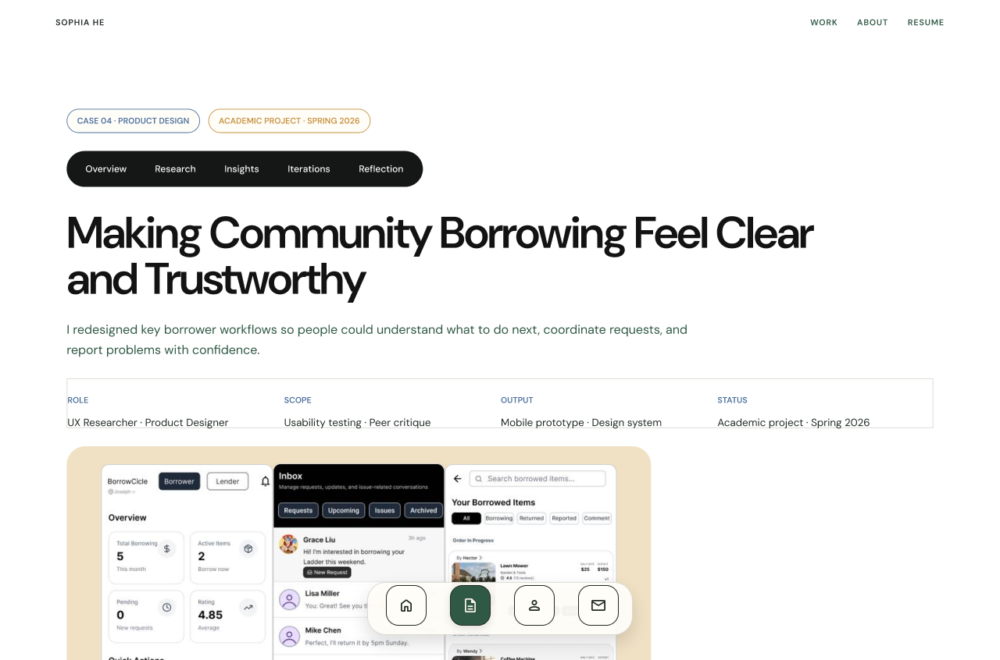
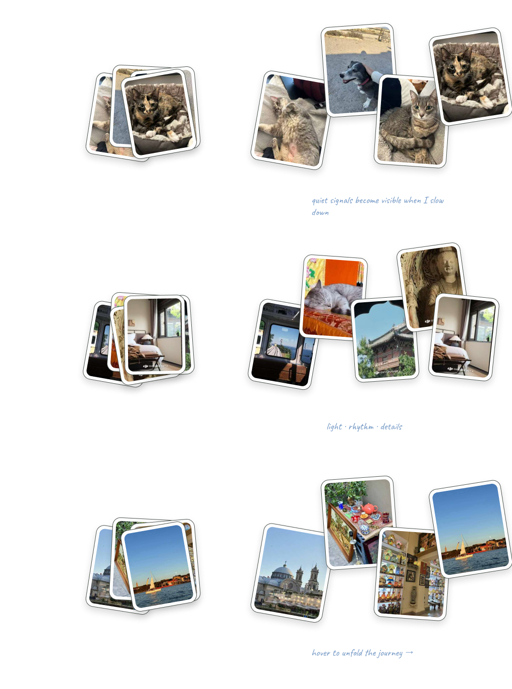

01LAW
ZHONG LUN LAW FIRM

UX DESIGN PORTFOLIO · TORONTO
When tools can generate almost anything, designers still decide what is meaningful,
clear, and worth creating.

SELECTED WORK
A few questions I’ve enjoyed
working through.

Explore case study ↗CASE 01 · LEGALTECH UX
Turning usability risks into clearer, safer steps for an estate-planning service.

Explore case study ↗CASE 02 · UX RESEARCH
Using thematic analysis to understand how context, mood, and mental capacity shape audio choices.

Explore case study ↗CASE 03 · PRODUCT DESIGN
Helping travelers move from scattered information to a confident choice.

Explore case study ↗CASE 04 · PRODUCT UX
Exploring how clearer information and task flows can support a smoother borrowing experience.
RECENT EXPERIENCE
Different environments,
similar curiosity.
ZHONG LUN LAW FIRM
W. YE LAW FIRM
KPMG SHANGHAI
TOOLKIT
A flexible toolkit for understanding people, making sense of evidence, and shaping useful experiences.
Methods are tools.
The question comes first.
Learning about needs, routines, and the context behind decisions.
Understanding experiences as they happen in everyday life.
Finding patterns and meaningful differences across qualitative data.
Turning observations into clear insights and design directions.
Shaping flows and interfaces around real user goals.
Making ideas tangible so they can be explored and tested.
Seeing where an experience works and where people get stuck.
Thinking critically about how people and intelligent systems work together.
A LITTLE ABOUT ME
I’m Sophia, a UX designer and researcher based in Toronto. I enjoy connecting research, information, and interaction design to make complex experiences feel more understandable.
I’m especially interested in work that balances practical problem-solving with creativity, care, and a strong point of view.
Say hello ↗
small moments, big inspiration
CONTACT
I’d love to hear from you.
Get in touch ↗